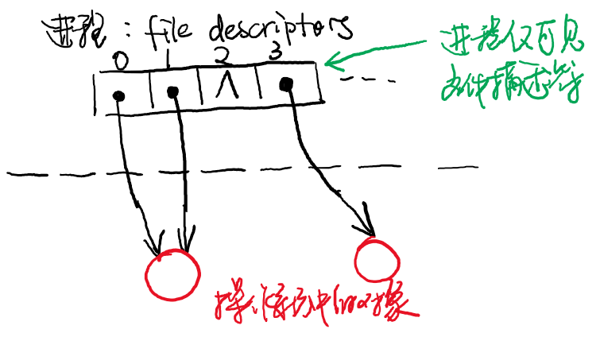
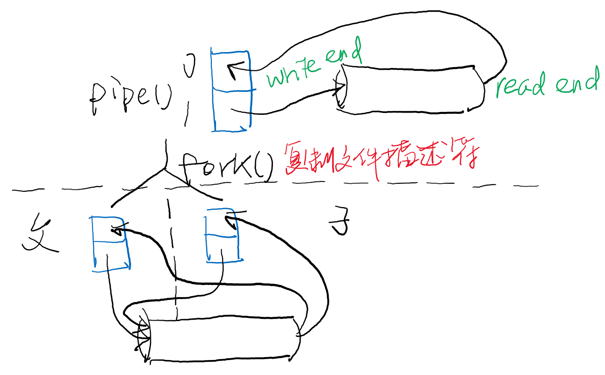
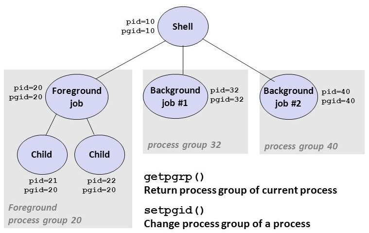

public: True class: center, middle # [C] 终端和Shell 蒋炎岩 <jyy@nju.edu.cn> 南京大学计算机软件研究所 --- class: center, middle ### 跑路预告 <br/> 因JYY(旅游)参加ICPC World Finals 2019，下周跑路 已经找好备胎，.red[不停课] --- # 本讲概述 > 我们已经学习了进程管理的API (fork, exec, exit)，并且知道操作系统会加载第一个进程 > > * 我们是如何与操作系统第一次接触的？ > * Shell是如何实现的？ ---- * 终端 * Shell的实现 --- class: center, middle # 终端 --- # [tty](https://en.wikipedia.org/wiki/Teleprinter) (Teleprinter) 最基础的.red[I/O设备]之一，最早就是机械打字机 .float-right[<img src="../static/wiki/os/2019/img/vt100.jpg" width="250px"/>] * 物理输出到打印纸上 * 物理打印不能“删除一个字符” (只能打印“前面那个字符被删掉了”) ---- CRT技术出现后 * <del>Virtual</del>Video Terminal * VT-52：80 x 24; 双向滚动; 光标控制命令 (在那个时代太酷了！) --- # 终端：人机第一接口 运行在最小“操作系统”上的应用程序(init) * Linux启动时可以指定init (`init=/bin/systemd`) ---- 第一个进程做的事情： * `/dev/console`依然可以访问 ```c int main() { ... // Everything is a file open("/dev/console", O_RDWR); // 0, stdin open("/dev/console", O_RDWR); // 1, stdout open("/dev/console", O_RDWR); // 2, stderr ... } ``` --- # 向终端输出 这是我们最常见的操作 * `stdout`默认连接到终端 * `printf("Hello World\n")`就输出到终端 * 但`stdout` <math>\ne</math> 终端 --- # [ANSI Escape Codes](<https://en.wikipedia.org/wiki/ANSI_escape_code>) 一系列终端“密码” (in-band控制信号) * Start with ESC (`\033`) `[` * 光标移动；屏幕清除/滚动；设置前景/背景色/粗体…… * 例子：`ls --color | less`，看到好多ESC * 实际的例子：sperf参考实现 ---- 用到的escape codes: ```c #define ESC "\033[" #define move(x, y) put(ESC "%d;%dH", y + 1, x + 1) #define setbg(id) put(ESC "48;5;%dm", id) #define setfg(id) put(ESC "38;5;%dm", id) #define clear() put(ESC "2J") #define reset() put(ESC "39m" ESC "49m") ``` --- # 输出终端自适应 既希望`./a.out`能显示彩色，还希望`./a.out | less`人类可读？ * `ESC`烦的一笔 还记得那年坑过我们的`printf`吗？ ```c int main() { printf("Hello"); bug(); // *(int *)NULL = 0; } int main() { for (int i = 0; i < n; i++) { fork(); printf("Hello\n"); } } ``` ------ - isatty系列函数 ([tty-test.c](/static/wiki/os/2019/demos/tty-test.c)) --- # 从终端输入 终端默认是“cooked mode”，即自带一个“行编辑器” * vim用户：`set -o vi` (bash); `bindkey -v` (zsh) * 只有按下回车键，read系统调用才返回 ---- 为了实现按键即返回功能，需要设置为raw mode ([tty-raw.c](/static/wiki/os/2019/demos/tty-raw.c)) * 有了它，就能实现vim啦！ * 有了它，给read设置一个timeout，就能在没有按键的前提下更新屏幕啦！ * 库函数(STFW)能帮我们实现各种高级功能；例子：[dialog.sh](/static/wiki/os/2019/demos/dialog.sh) --- class: center, middle # Inside the Shell --- # Shell: 原理 Shell是一个语言解释器 * 简单来说，就是一个“表达式求值器”，类似输入`3 + (4 * 5) / 2`，输出`13` * 把Shell程序翻译成系统调用的序列 ---- ```c while (1) { fgets(cmd, size, stdin); parse_and_execute(cmd); } ``` --- # Inside the Shell * 预处理：`$()`，在shell中执行，然后把结果粘贴到脚本中 * `cmd > file < file`，执行命令 * `cmd1; cmd2`, `cmd1 && cmd2`, `cmd1 || cmd2`，顺序执行多个命令 * `cmd1 | cmd2` 管道连接两个命令 ---- .green[问题：优先级？`echo hello > a.txt | cat`] -- count: false * bash: `>`优先级更高，输出到文件 * zsh: 相当于tee --- # Shell: 执行程序 fork-execve-wait： ```c int pid = fork(); if (pid == 0) { // 管道、重定向、…… execve(...); } else { if (!endswith("&")) { wait(NULL); } } ``` --- # 管理输入输出：文件描述符 `printf()`到底发生了什么？ * `gcc -static a.c && strace ./a.out`告诉你答案 (有省略) ------ ``` execve("./a.out", ["./a.out"], 0x7ffc041ea280 /* 26 vars */) = 0 brk(NULL) = 0x233c000 brk(0x233d1c0) = 0x233d1c0 ... write(1, "Hello World\n", 12) = 12 exit_group(0) = ? ``` ------ * `write(1, …)`: 向编号为1的文件描述符写入数据 --- # 文件描述符 *Everything is a file*，通过.red[文件描述符]访问操作系统里的对象 * `open()`, `pipe()`等会返回文件描述符 .center[] --- # 文件描述符 File descriptor: 一个操作系统中打开的文件 (一个.red[指向操作系统内对象的“指针”]) * stdin: 0, stdout: 1, stderr: 2 * `open()`会返回没有被占用的第一个文件描述符 * 问题：.green[freopen可以重定向stdout，但stdout就永远消失了。如何在用完之后把stdout还回来？] -- count: false ------ * `int dup(int oldfd);` - 复制`oldfd` * `int dup2(int oldfd, int newfd);` - 关闭`newfd`，并复制`oldfd`到`newfd` (dup + close = dup2，为什么还需要它？) --- # 实现重定向 这就是fork-execve模式的好处 * 设计：.red[execve不改变文件描述符] * 可以运行.red[任意代码]完成子进程的配置 ---- ```c pid_t pid = fork(); if (pid < 0) { ... } if (pid == 0) { int fd = open(...); dup2(fd, STDOUT_FILENO); close(fd); execve(...) } else { ... } ``` --- # 实现重定向 (cont'd) .float-right[<img src="/static/wiki/os/2019/img/sudo-sandwich.png" width="250px"/>]没有权限？ ---- ```text $ echo hello > /etc/a.txt bash: /etc/a.txt: Permission denied $ sudo !! sudo echo hello > /etc/a.txt bash: /etc/a.txt: Permission denied ``` -- count: false ---- ```bash sudo bash -c 'echo hello > /etc/a.txt' ``` --- # 管道：进程间通信 `lhs-cmd | rhs-cmd`: 运行`lhs-cmd`，把stdout连接到`rhs-cmd`的stdin * `int pipe(int pipefd[2]);` 在操作系统中创建一个管道 * `pipefd[0]` - 读口；`pipefd[1]` - 写口 ---- 默认情况下，管道是有限大小、blocking的 * 管道满，write将等管道空出数据 * 管道空，read将等数据 --- # 管道 & fork 思考题：.green[为什么fork()不复制一份管道？] .center[] --- # 管道：父子进程共享 ```c if (pipe(fds) != 0) { perror("pipe"); exit(1); } pid = fork(); if (pid < 0) { perror("fork"); exit(1); } if (pid == 0) { // child dup2(fds[0], STDIN_FILENO); close(fds[0]); close(fds[1]); ... } else { dup2(fds[1], STDOUT_FILENO); close(fds[0]); close(fds[1]); ... } ``` --- # Recap: 实现Shell Shell的主要功能是将执行命令的脚本翻译成系统调用的序列 * `cmd > file < file` - 使用`fork-open-dup-execve` * `cmd1; cmd2`, `cmd1 && cmd2`, `cmd1 || cmd2` - 按顺序执行 * `cmd1 | cmd2` - 使用`pipe-fork-dup-execve` * 预处理：`$()` - 创建一个shell，将输出重定向到管道中读出 --- # [Job Control](https://www.gnu.org/software/libc/manual/html_node/Job-Control.html) Shell除了执行上述命令外，还能“控制多个程序同时执行” * `Ctrl-Z`, `jobs`, `fg`, `bg`, `suspend` ---- .red[Job control] (仅interactive shell) * `cmd &`能创建在后台运行的命令(job) * `Ctrl-C`可以杀死前台的job * 前台运行的job可以通过`Ctrl-Z`切换到后台 * 这一切都是怎么实现的？ --- # 信号机制 在应用层实现的中断 ([signal-demo.c](/static/wiki/os/2019/demos/signal-demo.c)) ```c typedef void (*sighandler_t)(int); sighandler_t signal(int signum, sighandler_t handler); ``` 在程序执行到一半时“跳转”到某个函数执行 * SIGINT默认的行为是退出 * 思考题：.green[如何在操作系统中实现信号？] --- # 神秘的Ctrl-C .float-right[<img src="/static/wiki/os/2019/img/why.jpg" width="200px"/>]在我们按下Ctrl-C的时候，程序就神奇地终止了，即便它在死循环！ * 这是由信号(signal)机制实现的 * `kill -SIGINT pid`能够发送这个信号 * .green[按下Ctrl-C之后，谁给谁发送了信号？] * .green[为什么shell结束后，所有进程都消失了？] --- # 终端 - Session - Jobs 依靠“进程组”实现 .center[] --- # 问题的答案 * 接收到Ctrl-C的终端驱动程序会给终端对应的进程组发送`SIGINT` (所有进程都会收到) * Shell也可以选择使用raw mode，读取Ctrl-C，然后使用`kill()`发送`SIGINT` * 此时shell还需要把其他输入转发给jobs (tmux的实现) * Shell关闭时 * 给所有jobs发送`SIGHUP` (hang up)，默认行为是结束进程 * nohup就是忽略这个信号